資料が多くて大変
マニュアル、選手名簿、球数カウンターなど、準備だけでも負担になります。
スマホひとつで、アナウンス当番をサポート
無料で使える野球アナウンス支援アプリです。表示された文言を読むだけ。スマホ・タブレットで、試合前案内、打者案内、守備交代、投球数管理まで分かりやすくサポートします。
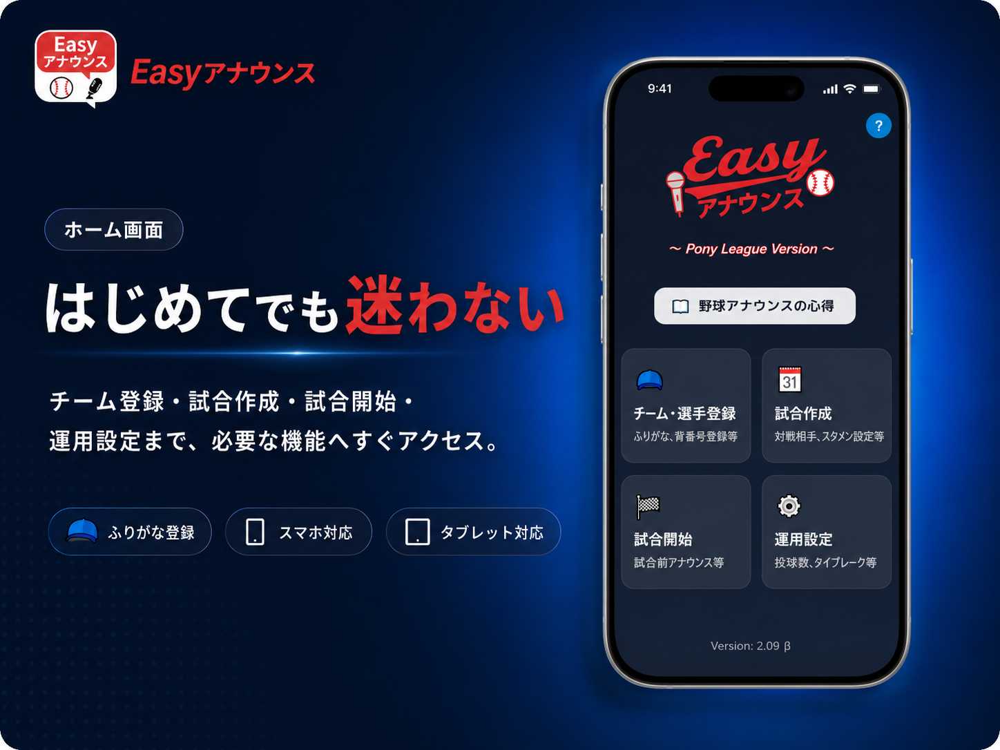
公式Instagram
新機能、操作方法、よくあるご質問への回答などを掲載しています。フォローして最新情報をご確認ください。
料金について
アプリのインストールも、Webアプリの利用も無料です。会員登録も必要ありません。まずは試合前に操作を試してみてください。
こんなお悩みありませんか？
マニュアル、選手名簿、球数カウンターなど、準備だけでも負担になります。
代打、代走、守備変更が重なると、どの順番で読めばよいか迷います。
次の案内を考えることに集中して、子どものプレーを見逃してしまいます。
主な機能
操作した内容に合わせて、アナウンス文言を画面に表示します。
試合開始前の案内、シートノック、スターティングメンバー発表を支援します。
打順、守備位置、選手名、背番号などを登録内容から表示します。
交代内容を画面で選択し、読み上げる順番に合わせた文言を作成します。
投球数を記録し、イニング終了時などに投手の球数を案内できます。
アナウンス文言エリアには、共通デザインの読み上げボタンと停止ボタンを配置しています。
登録した選手名のふりがなを画面上に表示し、読み間違いを減らします。
1人で1塁側・3塁側の両チームを担当する運用にも対応しています。
現在はポニーリーグとボーイズリーグの運用に対応しています。
紹介画像
サイト掲載向けに加工した画像で、Easyアナウンスの主な流れと特長をまとめています。
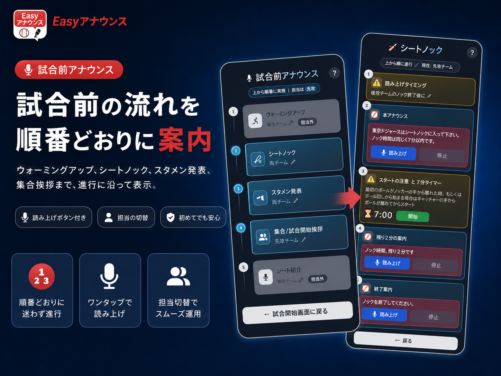
ウォーミングアップ、シートノック、スタメン発表、集合・試合開始挨拶まで、進行に沿って迷わず進められます。
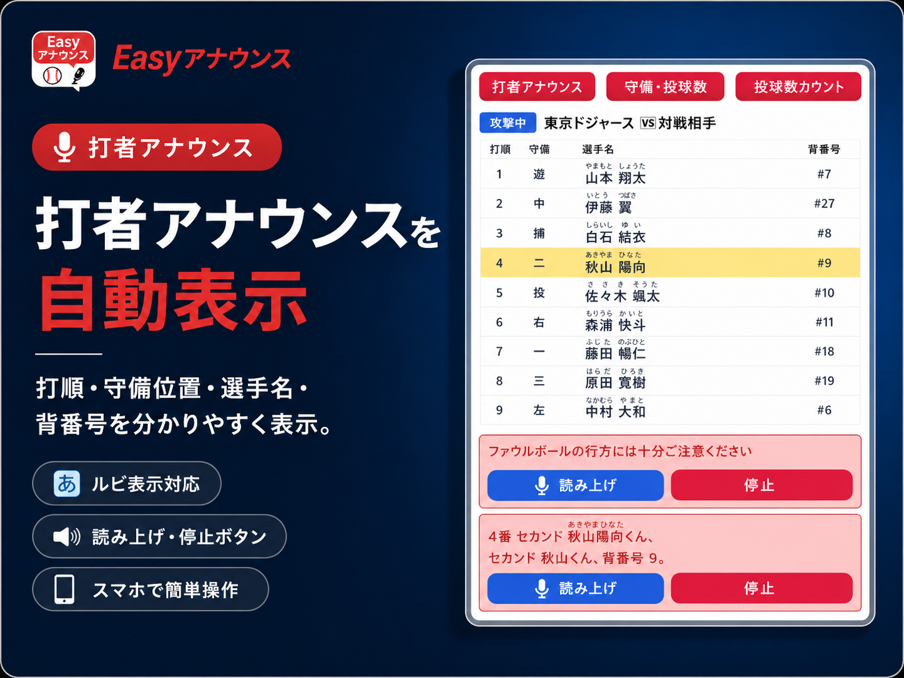
打順・守備位置・選手名・背番号を分かりやすく表示し、ルビ表示と読み上げボタンにも対応します。
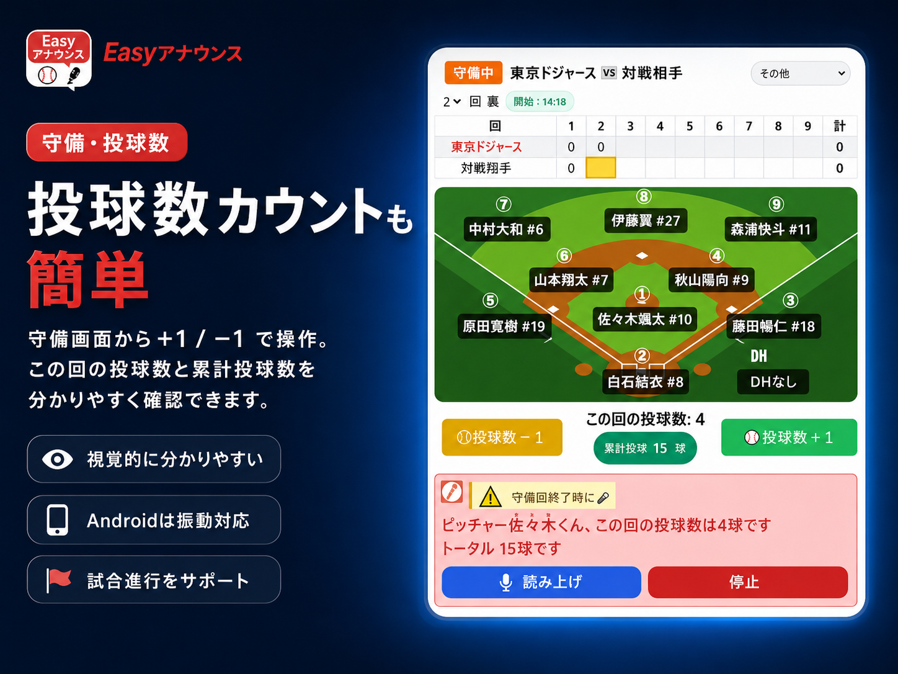
守備画面から＋1 / −1 で操作でき、この回の投球数と累計投球数を視覚的に確認できます。
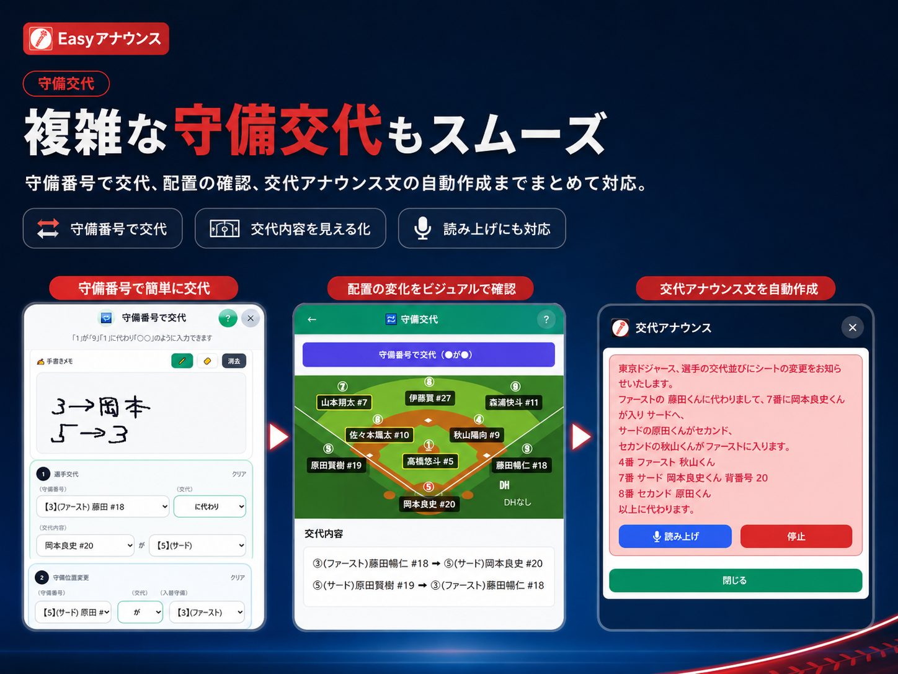
守備番号での交代、配置の確認、交代アナウンス文の自動作成までまとめて対応します。
実際の画面
スマートフォンやタブレットで見やすく、アナウンス文言には読み上げ・停止ボタンを共通デザインで配置しています。
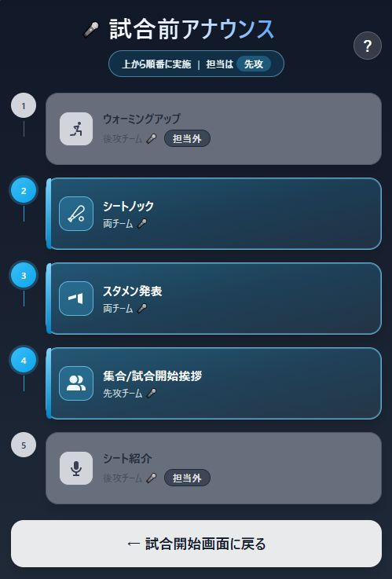
シートノック、スタメン発表、集合・試合開始挨拶を順番に進められます。
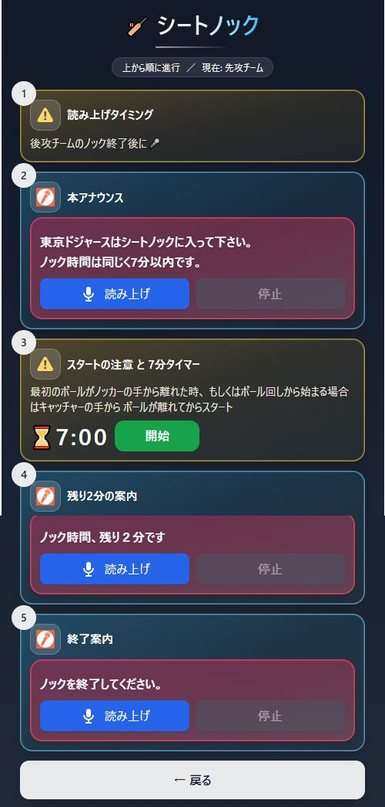
読み上げのタイミング、タイマー、残り時間の案内を一画面で確認できます。
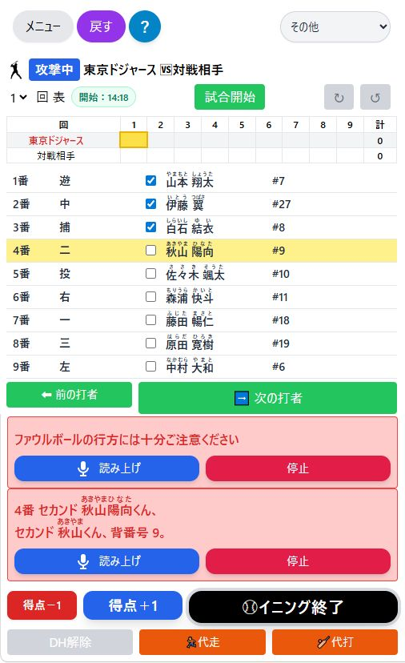
打者、得点、代走、代打などを試合の進行に合わせて操作できます。
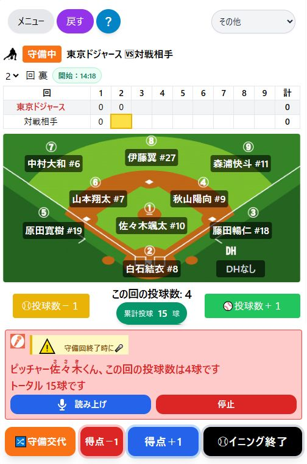
守備位置と投球数を確認しながら、イニング終了時の案内を行えます。
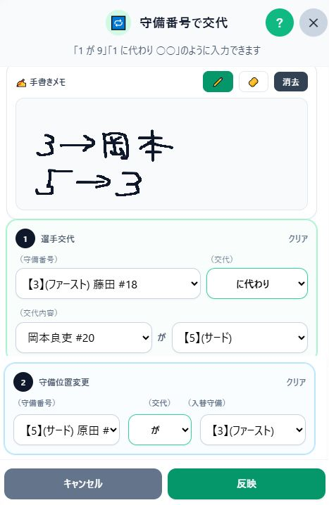
手書きメモを使いながら、複数の交代や守備位置変更をまとめて入力できます。
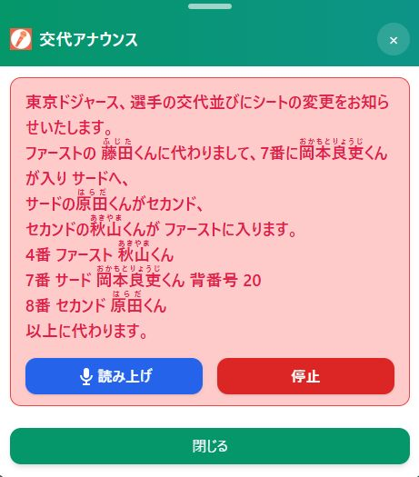
登録したふりがなをルビ表示し、複雑な交代内容も読む順番で表示します。
使い方
選手名、ふりがな、背番号などを登録します。
対戦チーム、先攻・後攻、スタメン、審判などを入力します。
打者、得点、選手交代、投球数などを画面から選びます。
ルビ付きの文言を確認し、読み上げボタンまたは自分の声で案内します。
端末別の始め方
Android
Google Playで「野球アナウンス支援 Easyアナウンス」をインストールしてください。
Google Playを開くiPhone・iPad
App Storeではなく、SafariでWebアプリを開き、ホーム画面へ追加して利用します。
手順を見るiPhone・iPad導入ガイド
Instagram内のブラウザでは追加できない場合があります。右上の「…」から外部ブラウザで開き、Safariを使用してください。
InstagramのプロフィールリンクからEasyアナウンスを開きます。
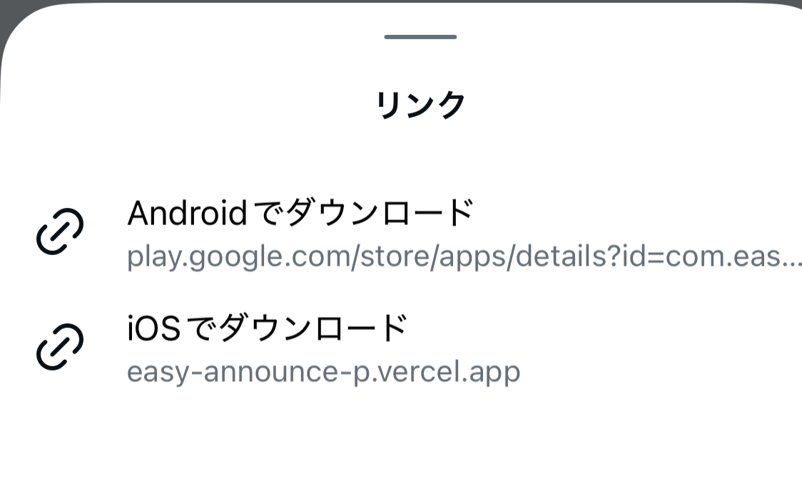
Instagram内ブラウザの右上メニューを開きます。
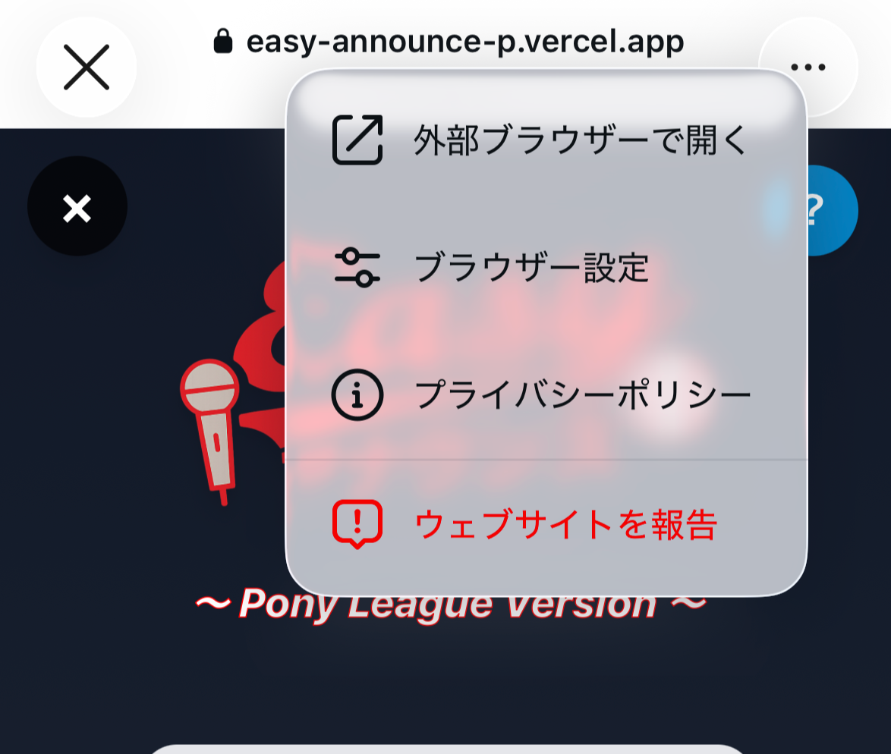
画面右下のメニューから共有・ブックマークの項目を表示します。
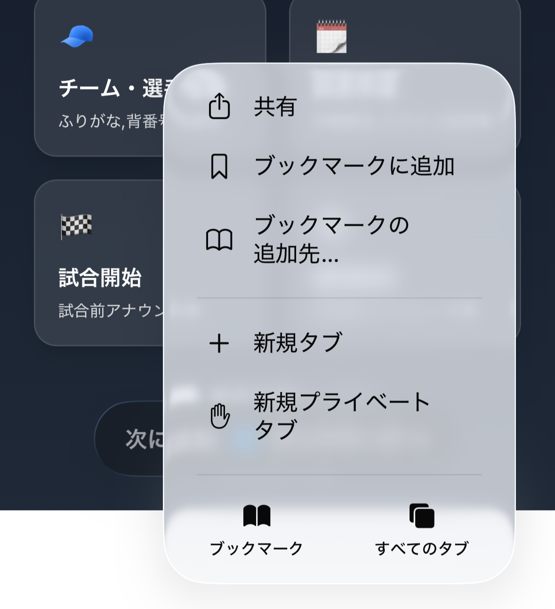
メニューを下へスクロールし、「ホーム画面に追加」をタップします。
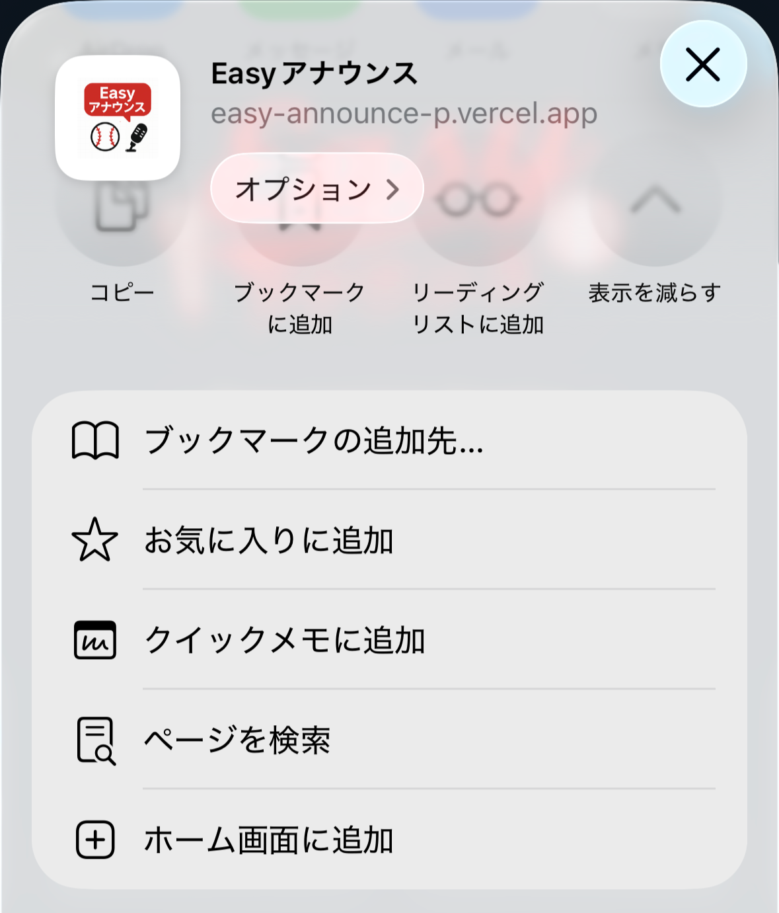
右上の「追加」を押すと、ホーム画面からアプリのように起動できます。
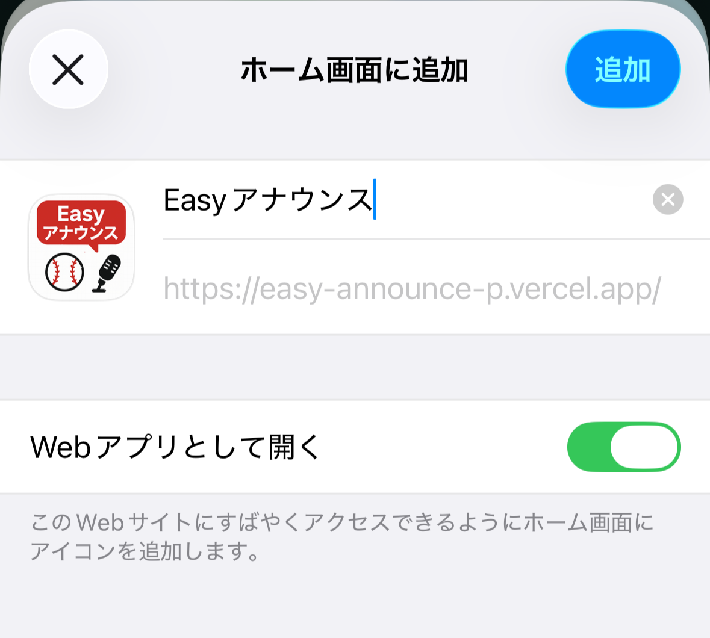
アップデート
投球数ボタンの視覚効果を改善し、Android端末ではバイブレーションに対応しました。
1人で両チームのアナウンスを担当できる機能を追加しました。
シートノック時間の変更機能を追加しました。
よくある質問
インストール方法、基本操作、データ保存、読み上げ音声などについてご案内します。
端末によってインストール方法が異なります。Android端末はGoogle Playからインストールできます。iPhone／iPadはSafariでWebアプリを開き、ホーム画面に追加して使用します。
ホーム画面にアイコンが追加され、通常のアプリと同じように使用できます。
画像付きの手順を見る本アプリは、両チームがそれぞれ自チームのアナウンスを担当することを前提としたアナウンス支援アプリです。試合の流れに合わせて、自チームが行うべきアナウンス内容を画面に表示し、読み上げをサポートします。
ご安心ください。アナウンスは大きく分けて「試合前」「試合中」「試合後」の3つの流れがあります。この流れに沿って操作を行うと、読み上げる文章が表示されます。
問題ありません。メニュー画面の【試合を継続する】ボタンで復帰できます。
はい。インストール後は基本的にオフラインで使用できます。
※初回インストール時は通信環境が必要です。
本Webアプリはインストール後、基本的にオフラインで使用します。データは端末内に保存され、外部へ送信・共有されることはありません。個人情報が外部に送信されることはありません。
本アプリはWebアプリのため、アプリのアップデート操作を行わなくても自動的に最新の状態に更新されます。そのため、操作方法が一部変更されることがありますが、不具合の修正や使いやすさ向上のための改善となります。
※通信環境があるときのみ更新され、オフラインでは更新されません。
はい、可能です。【バックアップ】を行い、他端末で【復元】を行うことで復元できます。
運用設定画面の【チュートリアル】に簡単な操作方法を記載していますので参考にしてください。各画面の上部にある「❔」ボタンを押すと使い方が表示されます。
推奨端末は7インチ以上のタブレットです。スマートフォンでも使用可能ですが、操作性・視認性の面からタブレット利用を推奨します。
Android端末では、端末側の設定から読み上げ音声を変更できます。「設定」→「ユーザー補助」→「優先するエンジン」→「音声データをインストール」→「日本語」から、音声Ⅰ、音声Ⅱ、音声Ⅲ、音声Ⅳの4種類を選択できます。
※アプリ内の表示名は同じでも、端末設定で選んだ音声によって実際の読み上げ音声が変わります。
現在は標準音声のWeb Speech APIを使用しています。今後のアップデートで、より滑らかで自然な音声へ改善予定です。
【運用設定画面】で規定投球数、タイブレークルールの変更が可能です。
無料で今すぐ始める